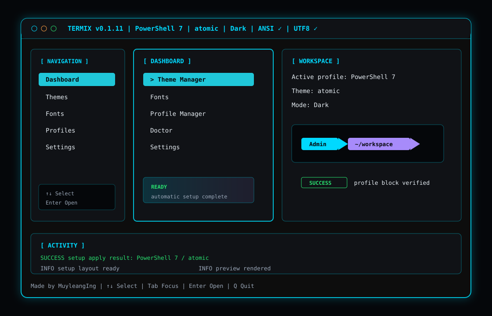

{kind=link}
TERMIX v0.1.0Dark
Navigation
› Themes
Preview Lab
Fonts
Open source terminal workspace
A focused CLI and TUI for managing terminal profiles, Oh My Posh themes, Nerd Fonts, Windows Terminal, PowerShell 7, Git Bash, and WSL.

Terminal style demo
Use this visual preview in GitHub Pages, README screenshots, or release notes so users can see the terminal style before installing Termix.
TUI style system
Navigation
› Themes
Preview Lab
Fonts
Prompt
Admin~/workspace
main ✔
READY rendered by Oh My Posh
Font Manager
CaskaydiaCove missing
Cascadia Code active
W applies Windows Terminal
Install
Normal users do not need to clone the repository or install Go. Use the installer script from GitHub Pages. The script downloads the latest Termix binary from GitHub Releases. On Windows, it also bootstraps the default tools, CascadiaCode Nerd Font, and official Oh My Posh themes. Open a new terminal before running setup so the interactive picker receives arrow keys correctly.
irm https://muyleanging.github.io/Termix-Tui/install.ps1 | iex
termix setup
termix-tuicurl -fsSL https://muyleanging.github.io/Termix-Tui/install.sh | bash
termix setup
termix-tuiManual download
You can also download Termix manually from GitHub Releases:
Developer build
This is only for contributors or developers.
go mod tidy
go test ./...
go build -o bin/termix.exe .
.\bin\termix.exe tuigo mod tidy
go test ./...
go build -o bin/termix .
./bin/termix tuiSetup and recovery
Termix keeps theme files, cache metadata, shell profile blocks, and font settings separate. That means broken cache can be cleared without deleting themes, and shell profile integration can be repaired without duplicating Oh My Posh commands.
termix setup
termix-tuiPicks the target shell profile, verifies official themes, and applies the default Termix font/theme.
termix reinstall
termix reinstall --dry-runClears cache metadata, rebuilds official theme cache, repairs the managed profile block, saves config, and runs with fallback fonts.
termix repair
termix profile repair "PowerShell 7"Fixes CONFIG NOT FOUND, missing theme paths, duplicate profile blocks, and stale cache references.
termix themes update
termix cache rebuild
termix cache clearOfficial themes come from Oh My Posh themes. Clearing cache removes metadata only; downloaded theme files stay available.
# BEGIN TERMIX THEME
oh-my-posh init pwsh --config "FULL_THEME_PATH" | Invoke-Expression
# END TERMIX THEMETermix backs up profile files and replaces only its managed block, so repeated apply commands do not create duplicates.
termix uninstall
termix uninstall profile
termix uninstall cache
termix uninstall downloaded-themes
termix uninstall configBare uninstall removes Termix-managed profile blocks, config, cache, downloaded themes, and the executable. Component commands remove only that part.
CLI
| Command | Purpose |
|---|---|
termix |
Show CLI help and available commands. |
termix tui or termix-tui |
Launch the dashboard. |
termix setup |
Run first-time profile, font, and theme setup. |
termix repair --dry-run |
Preview profile, cache, theme, and font repairs without writing files. |
termix reinstall |
Clean broken cache, rebuild official themes, repair profile integration, save config, and mark setup complete. |
termix themes |
List discovered Oh My Posh theme files. |
termix themes update |
Download official Oh My Posh themes and rebuild cache. |
termix themes apply catppuccin_mocha --profile "PowerShell 7" |
Write or replace the managed Oh My Posh block in the selected profile. |
termix cache rebuild |
Rebuild cache from real theme files. If none exist, Termix imports official themes. |
termix doctor |
Check terminal, shell, Unicode, WSL, and Oh My Posh health. |
termix fonts list |
Show recommended fonts and installed/missing status. |
termix fonts apply "JetBrainsMono Nerd Font" --windows-terminal |
Save the font in Termix and optionally apply it to Windows Terminal with backup. |
termix fonts install "JetBrainsMono Nerd Font" --yes |
Install a supported Nerd Font only after explicit confirmation. |
Docs
Termix separates terminal design into three parts: the shell profile, the Oh My Posh prompt theme, and the terminal font. This keeps profile setup predictable and makes it easier to preview safely before writing profile files.
termix repair for CONFIG NOT FOUND, stale theme cache, or duplicate profile blocks.? or h for Termix help. Termix does not use F1.Fonts
Termix recommends a Nerd Font for prompt icons, but it should never require one to start.
If CaskaydiaCove Nerd Font is missing, Termix falls back to the next available
font and shows a warning instead of blocking the app.
CaskaydiaCove Nerd Font, CascadiaCode Nerd Font, JetBrainsMono Nerd Font, FiraCode Nerd Font, MesloLGM Nerd Font, Hack Nerd Font, UbuntuMono Nerd Font.
CaskaydiaCove Nerd Font, Cascadia Code, JetBrains Mono, Fira Code, Consolas, Courier New, monospace.
Enter saves the font in Termix. W applies it to Windows Terminal. I installs a missing recommended Nerd Font. A/E/D manage custom names. R rescans.
winget install DEVCOM.CascadiaCodeNerdFont
winget install DEVCOM.JetBrainsMonoNerdFont
winget install DEVCOM.FiraCodeNerdFont
winget install DEVCOM.HackNerdFontbrew install --cask font-caskaydia-cove-nerd-font
brew install --cask font-jetbrains-mono-nerd-font
brew install --cask font-fira-code-nerd-fontmkdir -p ~/.local/share/fonts
# extract Nerd Font .ttf files there
fc-cache -fv| Task | Steps |
|---|---|
| Fix missing font warning | Open termix, go to Fonts, choose an installed fallback such as Cascadia Code or Consolas, press Enter, then press W to write it to Windows Terminal. |
| Install Nerd Font | Highlight a missing recommended Nerd Font, press I, confirm with Y, then press R to rescan. |
| Add custom font | Press A, type the exact font family name, press Enter. Use E to edit and D to remove custom fonts. |
| Manual Windows Terminal setup | Open Windows Terminal settings and set the profile font face to an installed font, for example Cascadia Code, JetBrainsMono Nerd Font, or Consolas. |
Keyboard
Termix does not depend on the Windows Terminal F1 help shortcut.
If Windows Terminal still opens its Help/About popup before Termix receives
keyboard input, unbind F1 in Windows Terminal settings.json:
{
"command": "unbound",
"keys": "f1"
}Troubleshooting
| Problem | Fix |
|---|---|
| CONFIG NOT FOUND | Run termix repair, then apply a theme with termix themes apply catppuccin_mocha --profile "PowerShell 7". |
| Theme cache empty | Run termix themes update or termix cache rebuild. Cache rebuild never deletes downloaded themes. |
| Missing CaskaydiaCove Nerd Font | Use the Fonts page or run termix fonts apply "Cascadia Code". Missing Nerd Font is a warning, not a startup failure. |
| PowerShell prompt did not change | Run termix profile repair "PowerShell 7", restart the terminal, or reload the PowerShell profile. |
| Duplicate profile commands | Run termix repair. Termix replaces one managed block instead of appending duplicates. |
Contribute
Include your OS, shell, terminal app, Termix version, and the command or TUI screen where the issue happened.
Suggest new shells, font providers, theme sources, preview improvements, or setup workflow changes.
Run go test ./... before opening a pull request. Keep changes scoped and easy to review.

Founder and contact
Founder & Maintainer of Termix
Termix is an open-source project founded and maintained by Ing Muyleang. I build tools that make developer terminals easier to customize, repair, and manage across Windows, macOS, Linux, PowerShell, Git Bash, and WSL.